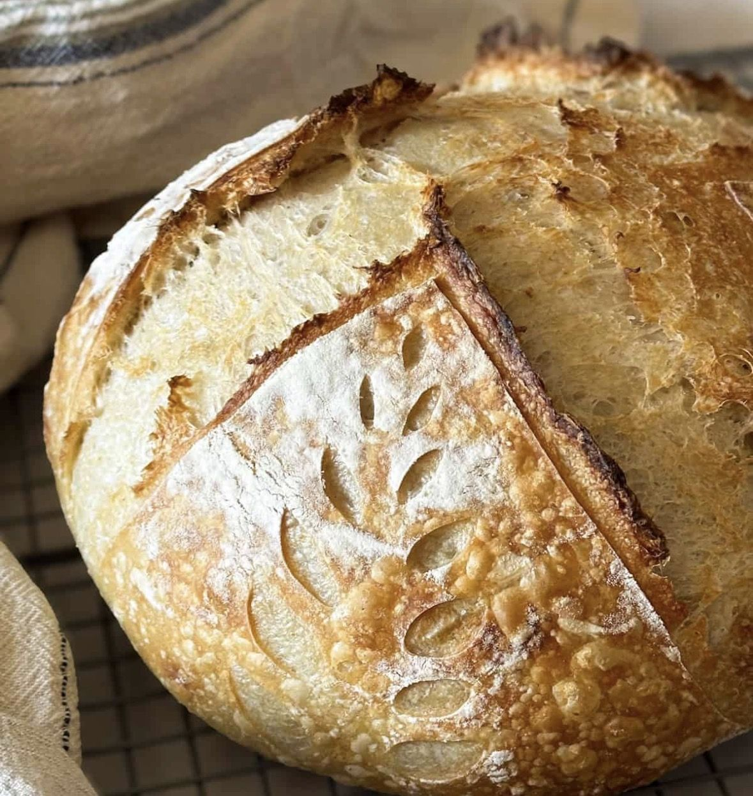
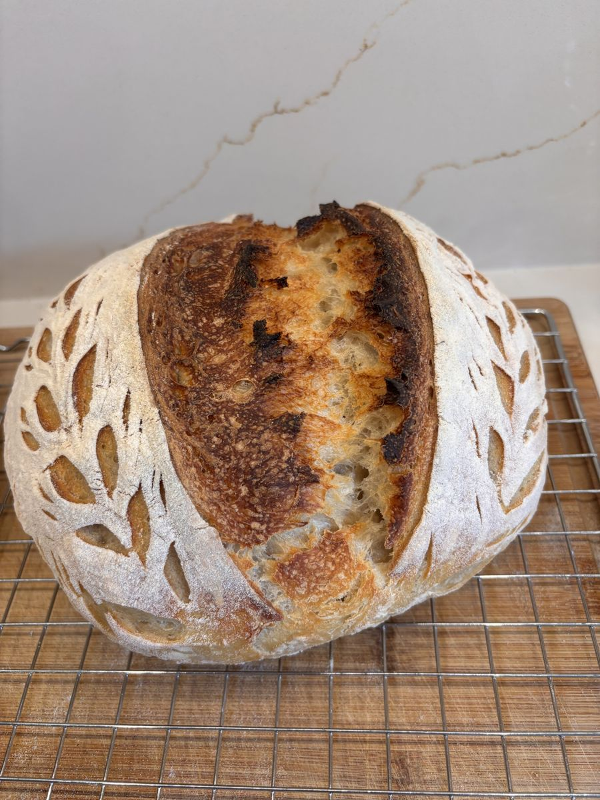
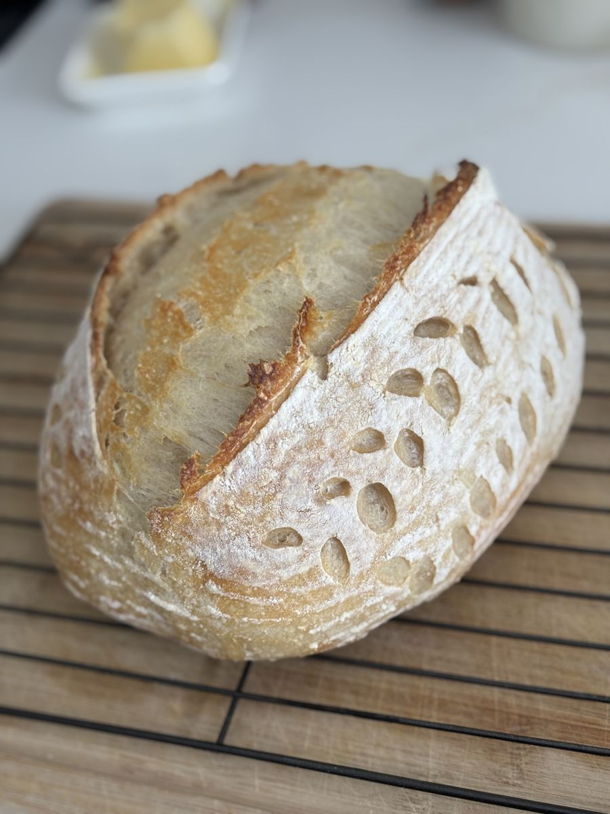

Gather Your Friends
A girls night, birthday, team outing or family get together
Serving Durham Region, Ontario
Grab your friends, pour the sips, and learn to bake real sourdough bread with Tara and Lady Whistledough, her 50-year-old vintage starter.


The workshop
A girls night, birthday, team outing or family get together
Experience the joy of mixing and stretching your own dough, step by step
Continuing the baking journey at home with confidence
Contact Tara using the form below.
You supply the location and the sips. Tara brings everything else.
Learn, sip and laugh. Everyone goes home with dough and starter.
$50 per person · $250 minimum workshop fee · Host joins for free
"What an incredible night! Huge thank you to Tara for hosting such a fun sourdough-making night. Between the science of measuring ingredients :), learning the magic of a live starter, practicing our stretch-and-folds, and chatting over good food and drinks, it felt less like a class and more like a great hangout with friends! 10/10 host, 10/10 vibes. Our loaf turned out delicious and a big hit in our house!"
"What a fun evening! I have always wanted to learn how to make sourdough bread, but was too intimidated to try on my own. Tara patiently walked us through all the steps. The bonus was having warm bread for my family to enjoy the next day! I highly recommend her workshop for an evening of learning and laughs with friends or family!"
"I’m obsessed with making sourdough bread thanks to you!! Can’t wait to share this experience with a workshop for my coworkers for you to host!"
"I was lucky enough to be part of one of your workshops and I haven’t been able to stop making bread with your starter since! Thank you for teaching me this new hobby, I can’t stop making bread for my family and friends."
Want to host a workshop? Send Tara a note to secure your hands-on sourdough experience.
$50 per attendee – Includes all ingredients, starters, and supplies. Minimum session booking is $250. As a thank you for organizing, the host attends completely free!
